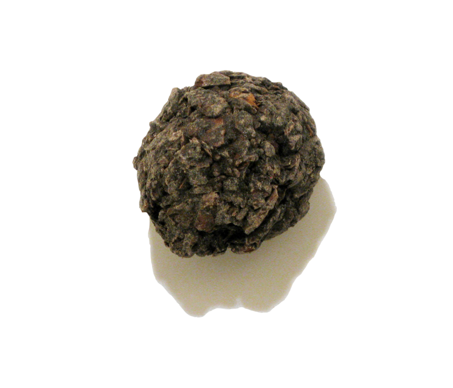

EL PERFUME NO ES UNA SEGUNDA PIEL! ES UN MOMENTO TOMANDO POSESIÓN DE UN TEMPLO ES PERMITIR LA VIDA DENTRO
busco colocar un estado de PresenciaMomento a través de materiales aromáticos, a manera de perfumería de diseño único, así como guiar el retorno a una conciencia olfativa en expansión, sensible y viva, donde pensar sobre el olor corporal sea (re)conocer al cuerpo desde un espectro de cambio, transformación y movimiento. (-)
Así llamaban los abuelxs Nahuas a las resinas aromáticas obtenidas de los arboles de copal (bursera bipinnata, bursera copallifera, bursera linaloe, bursera citronella...) que se extienden por todo el largo del Pacífico mexicano; del sur de Sonora y suroeste de Chihuahua bajando hasta Centroamérica. Son árboles de selvas bajas y climas extremos, pierden sus hojas durante la temporada de sequía y reverdecen con las lluvias. Tal vez por eso los antiguos habitantes de México asociaban la resina copalli con las divinidades acuáticas en su dualidad Tlaloc y Chalchiuhtlicue, y por lo cual estaba presente en toda clase de rituales y ceremonias; en el nacimiento de un nuevo ser y en la muerte de este, en rezos y curaciones, ofrendas para peticiones de lluvia, para sanear los espacios de las pestes y en general se encendía en cada familia al menos dos veces al día. "Copalli", incienso que se quema en las brasas ardientes de un popochcomitl, y en forma de humo blanco transforma, renueva, y protege la energía interna del cuerpo.
Mundialmente conocido, el copal es, tal vez, el olor mas simbólico en la cultura mexicana; por ser reconocido al olfato, por mantener una relación profunda respecto a su uso actual y la significación con las raíces ancestrales: En su forma de resina cruda para remedios contra afecciones respiratorias, en sahumerios para limpias y ceremonias. Como aglutinante de pigmentos para pintura, y en alta perfumería por su vital esencia extraída del fruto, el linnaloe.
En PresenciaMomento se trabaja actualmente con dos tipos de resina
Copal blanco de pencabb El copal blanco de penca (bursera copallifera) es recolectado sobre pencas de maguey durante la temporada de lluvias, tambien conocido como 'copal santo', 'copal limón', por su presente olor dulce resinoso y perfumada impresión fresca cuando se incinera en las brazas del carbón. Esta resina Copalli en forma de aceite es utilizada como protector energético del cuerpo metal, contra el frío exterior y su efecto sobre músculos y órganos,y para aliviar dolores de cabeza.
Copal negro de corteza Esta resina copalli es originada por insicines, picaduras o tajaduras de algunos insectos sobre la corteza de los arboles copalli. Es duea de un color ámbar amarillo verdoso, y en su forma de aceite aœn conserva su exquisito arma a madera oscura, a miel fría sobre cristales de alcanfor. Le pertenece una naturaleza caliente y alcanforada.